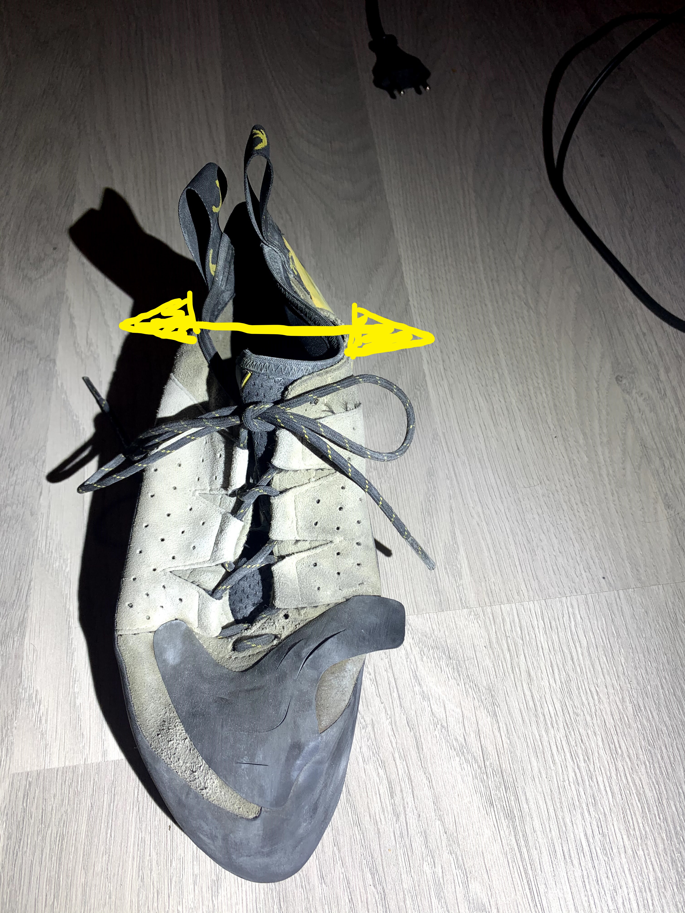
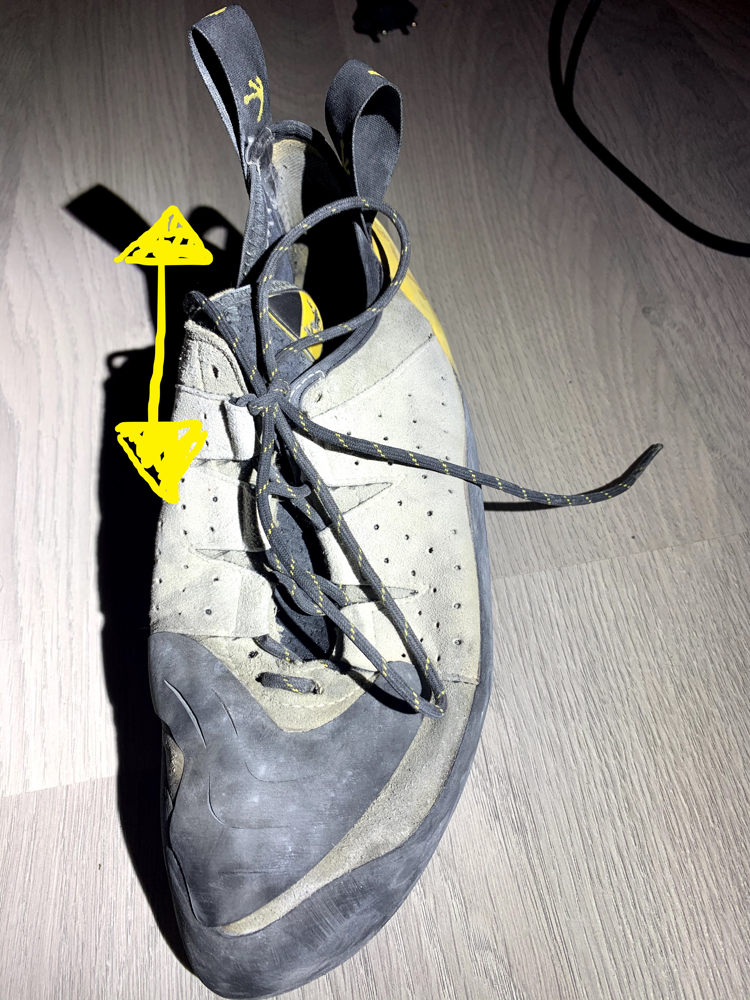

Båtmann og Kjærringa
Båtmannsknop
Relativt enkel knute for å knyte to tau sammen
Holder ganske OK
no video?
Kjærringknute
Har lett for å vandre
Sjelden det beste valget om man vil knyte noe
no video?
Men hva betyr det her for meg?
Men hva betyr det her for meg?
Hvorfor er det sånn her a?
no video?
Båtmann
no video?
Kjærring
Men hva skal jeg gjøre?!
Over under > Under over
Hvis høyre ende går over første gang, går venstre over andre
no video?
Hvordan vet jeg om jeg får til ting?!

Båtmann

Kjærring
Jeg har 99 problemer, men en kjærringknute er ikke et av dem
QA